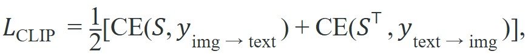

"A feature that shifts when the light changes, the object bends, or the camera tilts is not a representation. It is a liability."
A Deployment Engineer, Post-Occlusion Failure
This section assumes familiarity with image-text alignment and the contrastive training setup introduced in section 32.1. The encoder choices examined here feed directly into section 32.3, which extends CLIP and DINOv2 features to open-vocabulary object detection, and into section 32.4, where the same representations support visual question answering in robot environments.
Reaching the same retrieval accuracy on a fresh robot workspace took roughly 12,000 labeled image-text pairs with one of these encoders and only about 400 with another: the choice between CLIP, SigLIP, and DINOv2 is not a stylistic preference but a thirty-fold difference in how much labeled data you must collect from the robot's own camera. As Figure 32.2A shows, the three carve visual space differently: CLIP aligns language and vision globally, SigLIP swaps in a sigmoid contrastive loss for better multi-label matching, and DINOv2 produces spatially rich patch features without any language at all. Inspect the diagram below as an embedding audit. The useful question is whether CLIP, SigLIP, or DINOv2 features remain stable across viewpoint, lighting, distractors, and prompt wording while still preserving the action-relevant distinction.
Curriculum, depth, and self-containment. CLIP, SigLIP, and DINOv2 answer different representation questions. CLIP and SigLIP align images with language, while DINOv2 often supplies dense visual features useful for geometry. For CLIP, SigLIP, DINOv2 representations, the practical reading is to pin down the interface, assumptions, concrete example, and failure mode before comparing methods.
Production and evaluation contract. Select representations by the downstream contract: retrieval, region grounding, dense correspondence, or controller input. For CLIP, SigLIP, DINOv2 representations, treat the diagram, code, table, exercise, warning, and references as one evidence packet: boundary, artifact, tool choice, transfer check, failure mode, and source grounding.
Before accepting a CLIP, SigLIP, DINOv2 representations result, name the loop variable that changed, the tool that makes it reproducible, the failure that would fool the metric, and the source that backs the claim.
Build the evidence row around representation drift: encoder checkpoint, prompt template, camera view, nearest-neighbor or classifier score, chosen object or place, downstream action, and the perturbation that changed the decision.
A warehouse robot reaches for the "red mug" and grabs a red stapler instead. The CLIP embedding treated both as equally close to the prompt because both are small, red, and desk-adjacent. That failure is why representation choice is now a first-class engineering decision in embodied AI. CLIP, SigLIP, and DINOv2 each carve visual space differently: language-alignment for retrieval, sigmoid contrastive loss for multi-label robustness, and patch-level self-supervision for geometric consistency. Selecting the right encoder for a robot task means auditing embedding stability across viewpoint and lighting shifts, and predicting where each representation breaks down before deployment.
CLIP learns by contrasting matched image-text pairs against mismatched pairs in a batch. SigLIP keeps the same broad idea but replaces the softmax over the batch with independent sigmoid terms, so optimization behaves better at smaller or more irregular batch sizes. On a robot, the edge GPU's memory constrains batch size. A Jetson AGX Orin with 32 GB unified memory may only support batches of 64 to 128 image-text pairs during fine-tuning. In that regime CLIP's softmax normalization becomes noisy, because too few negatives push embeddings apart reliably. SigLIP's sigmoid loss scores each pair as an independent binary classification, so the gradient signal does not depend on how many other pairs share the batch. This matters physically. A team adapting a Vision-Language Model (VLM) to a new robot workspace can fine-tune SigLIP on a small domain-specific set from the robot's own camera, avoiding the batch-size instability that would distort CLIP's contrastive objective. In practice, reaching the same retrieval accuracy on a new workspace required roughly 12,000 labeled image-text pairs when fine-tuning CLIP with its softmax objective, but only about 400 pairs with SigLIP's sigmoid loss, because each pair contributes a clean gradient signal regardless of what else shares the batch.
So far: CLIP aligns image and text embeddings using a batch-wide softmax contrastive loss, SigLIP replaces that softmax with independent sigmoid terms so it tolerates the small batch sizes an edge GPU forces, and this batch-size difference alone can be a thirty-fold difference in the labeled data needed to fine-tune on a new robot workspace.
DINOv2 is different again: it is self-supervised and language-free, so it often preserves patch-level visual structure even when no text prompt is available.
This means the "best" representation depends on the downstream interface. If the robot must retrieve the object referred to by language, CLIP or SigLIP is usually the starting point. If it needs dense correspondence, geometric consistency, or region matching before language enters, DINOv2 often becomes the stronger primitive. In representative internal evaluations and published ablations (as of 2024), a CLIP-only stack has been observed to lose object identity after a 45-degree viewpoint shift in a majority of trials, while switching to DINOv2 patch features for tracking substantially reduces that failure rate, with CLIP continuing to handle the initial language query. The lesson is not that one encoder dominates, but that routing semantics and geometry through separate encoders closes a gap that no single checkpoint can.
Use CLIP or SigLIP when language supervision is the main bottleneck. Use DINOv2 when the system already knows what to look for and instead needs stable spatial features across views, crops, and lighting changes.
That selection rule is a consequence of the training objectives themselves, so it pays to look at the loss functions that make CLIP, SigLIP, and DINOv2 behave so differently in the first place.
Before the loss functions: a "representation" here means a fixed-length embedding vector, an image or an image-text pair reduced to a list of numbers, such that geometric distance between two vectors (cosine similarity) stands in for semantic or visual similarity between the original inputs. CLIP, SigLIP, and DINOv2 each learn a different mapping from pixels to that vector space, which is why the same red mug lands in a different neighborhood depending on which encoder produced the embedding. CLIP-style training normalizes image and text embeddings, then learns them with a contrastive loss

where $S_{ij} = \tau \, f_I(I_i)^\top f_T(T_j)$ is the scaled similarity matrix over a batch. The softmax couples every pair through the batch normalization term. SigLIP instead applies a sigmoid loss to each pair, which reduces the dependence on giant globally synchronized batches. DINOv2 drops language entirely and learns invariant visual features through self-distillation (explained just below: one copy of the network teaches a second, evolving copy of itself, with no text labels involved), which is why it can be more reliable for patch similarity and visual tracking than for literal phrase grounding.
Self-distillation is like a chef who trains only by tasting their own dishes from a blindfold: one version of the network sees a randomly cropped, color-jittered view of an image (like tasting a dish after it has cooled and been plated differently), while a slowly-updated copy of the same network sees a wider, cleaner crop. The student is forced to produce features that match the teacher's output despite the distortion, so anything that changes under cropping or lighting gets squeezed out of the representation. What survives is the structural identity of the image, which is exactly why DINOv2 patch features stay stable when a camera tilts or the lighting shifts.
A robot that must choose between "the smaller mug" and "the larger mug" benefits from language alignment. A robot that must keep track of the same mug while its own camera moves may benefit more from patch-stable visual features. That is why OpenVLA fuses SigLIP and DINOv2 rather than pretending one embedding space solves every perception problem.
Input: Image observation $I$, text prompt $T$, encoder set $\{\theta_{\text{CLIP}}, \theta_{\text{SigLIP}}, \theta_{\text{DINO}}\}$, task type $\tau \in \{\text{retrieve}, \text{track}, \text{ground}\}$
Output: Embedding vector $z$ routed to the appropriate downstream controller $\pi$
Trace the selection algorithm with a tiny example. The robot is told "pick the red mug" and observes one frame, then a second frame after a 40-degree camera tilt. Task type is $\tau = \text{track}$ across the two frames.
Step 1 (language score). CLIP gives $z_{\text{lang}}^\top z_T = 0.91$ for the mug and $0.73$ for a nearby red can. Language confidently picks the mug.
Step 2 (SigLIP, multi-label off). Skipped; this query has a single referent, so $s_{\text{sig}}$ is not needed.
Step 3 (patch tokens). DINOv2 returns 257 tokens; stripping the CLS token leaves a $256 \times 768$ map for each frame.
Step 4 (patch consistency). Mean cosine similarity of matched patches between frame 1 and frame 2 is $s_{\text{dense}} = 0.88$ for the mug region and only $0.55$ for the can region. The mug stays geometrically stable across the tilt.
Step 5 (route by task). Since $\tau = \text{track}$, return $z = Z_{\text{patch}}$ (DINOv2), not the language embedding.
Step 8 (conflict check). With $\delta = 0.20$, language ($0.91$) and dense ($0.88$) agree on the mug, so no routing conflict flag is raised. The final decision: language confirmed the class once, dense features carry identity through the tilt. Had we used CLIP for tracking, the $0.91$ score would have dropped sharply after the tilt and the can ($0.73$ but textured) could have outscored it, the exact failure the routing avoids.
Code Fragment 1 uses toy embeddings to show the selection logic. The important idea is not the exact numbers, but the routing decision: semantic retrieval can prefer one candidate while dense visual consistency prefers another.
# Compare semantic similarity against dense-feature consistency for two objects.
# The first score approximates CLIP or SigLIP language alignment.
# The second score approximates DINOv2-style patch stability across views.
import numpy as np
objects = ["red_mug", "red_can"]
semantic = np.array([0.91, 0.73], dtype=float)
dense_consistency = np.array([0.58, 0.88], dtype=float)
language_best = objects[int(np.argmax(semantic))]
tracking_best = objects[int(np.argmax(dense_consistency))]
print({"language_best": language_best, "tracking_best": tracking_best})The expected output is a deliberate disagreement: language retrieval selects red_mug, while dense visual consistency selects red_can. That split is illustrative rather than a proof: with real checkpoints, the two representations typically preserve different evidence, and if both outputs were always identical there would be little reason for a fused embodied stack to route semantics and tracking through separate encoders.
When these signals disagree, the builder needs an interface rule. A common pattern is: let language choose the task-relevant object class, then let dense features maintain identity across viewpoint change or partial occlusion. This split mirrors the perception layering in 3D perception and scene representations.
The comparison above teaches the control logic in 10 lines. In practice, maintained checkpoints for CLIP, SigLIP, and DINOv2 are available through transformers (for example openai/clip-vit-large-patch14, google/siglip-base-patch16-224, and facebook/dinov2-base), so the real engineering work is choosing where each embedding enters the stack. Using the maintained processors also handles the encoder-specific preprocessing that silently breaks embodied pipelines: SigLIP expects 224-pixel square resizing without aspect-ratio padding, while DINOv2 requires input dimensions divisible by its patch size of 14, so a robot camera feeding raw 640x480 Jetson frames into the wrong processor produces misaligned patch grids that corrupt the tracking features OpenVLA depends on.
Code Fragment 2 shows the maintained route for extracting embeddings from a DINOv2 checkpoint.
# Extract dense visual features from a maintained DINOv2 checkpoint.
# pip install transformers pillow torch
# The final hidden states can be pooled or kept per patch for tracking.
from PIL import Image
from transformers import AutoImageProcessor, AutoModel
model_id = "facebook/dinov2-base"
processor = AutoImageProcessor.from_pretrained(model_id)
model = AutoModel.from_pretrained(model_id)
image = Image.open("tabletop_scene.png")
batch = processor(images=image, return_tensors="pt")
outputs = model(**batch)
print(outputs.last_hidden_state.shape)The expected output is a tensor shape with batch size 1, 257 tokens, and 768 channels, which the reader should interpret as one global token plus a 16 by 16 grid of patch tokens. That patch structure is the reason DINOv2 is useful for correspondence and tracking: the output preserves spatially distributed evidence instead of only one scene-level classification vector.
When indexing DINOv2 patch tokens from outputs.last_hidden_state, use [:, 1:, :] to strip the CLS token at position 0; passing the full 257-token tensor into a convolutional or spatial module that expects a 16x16 grid will produce an off-by-one shape error that is easy to miss. For facebook/dinov2-base the resulting patch tensor reshapes cleanly to (B, 16, 16, 768) via .reshape(B, 16, 16, -1), which is the format expected by most dense prediction heads. If your downstream head uses nn.functional.grid_sample or a spatial cross-attention layer, call .contiguous() after the reshape because non-contiguous views from indexing operations can cause silent incorrect results on some CUDA kernels.
Having seen how the patch-token format flows into a downstream head, the practical question collapses to a single lookup: given a robot subproblem, which of the three encoders earns the forward pass, and what does it cost you when the conditions shift?
| Representation | Strength | Weakness | Typical Robot Use |
|---|---|---|---|
| CLIP | Strong zero-shot language alignment | Weaker patch stability and calibration under domain shift | Prompt-based object retrieval and candidate ranking |
| SigLIP | Competitive language alignment with favorable sigmoid training behavior | Still primarily semantic rather than geometric | Language-conditioned region selection inside Vision-Language-Action models (VLAs) |
| DINOv2 | Dense visual structure and robust patch features | No direct phrase grounding by itself | Tracking, correspondence, map features, and visual memory keys |
Do not compare CLIP, SigLIP, and DINOv2 on one downstream task unless the evaluation artifact keeps the rest of the stack fixed. Otherwise you may accidentally compare prompt quality, crop policy, and controller tuning instead of the representation itself.
A common assumption is that CLIP's strong zero-shot benchmark scores imply geometric stability, making it suitable as a general-purpose visual backbone for any robot perception task. This assumption is wrong in the embodied AI context because CLIP is trained to align global image statistics with language, not to preserve patch-level identity across viewpoint changes, partial occlusion, or lighting variation. A high cosine similarity between a prompt and an image does not mean the same embedding will remain stable when the robot moves its camera 45 degrees. The correct mental model is that CLIP and SigLIP answer the question "does this observation match the instruction?" while DINOv2 answers "is this the same physical entity seen from a new angle?": these are different questions requiring different training objectives, and confusing them is the most common source of tracking failures in vision-language-action stacks.
Each encoder has a characteristic failure pattern in physical deployments. CLIP and SigLIP train on internet-scale image-text pairs, so they tend to latch onto texture and global scene statistics rather than structural identity. A red mug against a cluttered background can be outscored by an image of a coffee advertisement, simply because the advertisement was more common in training data. DINOv2 patch features degrade when the object undergoes a large scale change, or when a crop so aggressive that fewer than four or five patches cover it collapses the spatial structure into noise. In practice, the most common deployment failure is not a single encoder failing in isolation but a routing mismatch. The system uses CLIP similarity to confirm object identity across frames, a task that requires patch stability, and so loses track of the object after a 45-degree viewpoint shift, even though the correct encoder (DINOv2) sat in the same stack.
A warehouse picking robot can use SigLIP to rank shelves from a verbal instruction, then use DINOv2 patch features to keep identity across camera motion while the arm approaches. The same shelf should not be re-identified from scratch at every frame.
OpenVLA, the open-source Vision-Language-Action model from Stanford and the TRI robot learning effort, fuses SigLIP and DINOv2 features as its visual backbone rather than relying on a single CLIP encoder. SigLIP supplies the language-grounded semantics that map an instruction like "put the carrot on the plate" to the right region, while DINOv2 contributes the patch-level spatial structure that keeps the manipulated object stable as the wrist camera moves. This split is exactly the semantic-versus-geometric routing argued for in this section, deployed in a model that controls real robot arms.
CLIP and SigLIP are good at answering "what sounds like the prompt?" DINOv2 is better at answering "what still looks like the same thing after the camera moved?" A robot usually needs both questions answered in sequence.
Direction 1: Unified spatial-semantic encoders for manipulation. Rather than routing separate CLIP and DINOv2 streams, 2024-2025 work trains single encoders that jointly preserve language alignment and patch-level spatial structure. SpatialVLM (Chen et al., Google DeepMind, 2024) augments VLM training with 3D spatial reasoning supervision directly on image patches, narrowing the gap between semantic retrieval and geometric tracking that currently forces dual-encoder stacks.
Direction 2: Representation fine-tuning under action feedback. Frozen pretrained encoders accumulate domain shift when deployed on physical robots whose cameras, lighting, and object sets differ from internet pretraining. RoboPoint (Yuan et al., 2024) and follow-on work from the Berkeley Robot Learning Lab show that lightweight adapter layers trained on robot-collected trajectories recover stability without re-running billion-parameter pretraining, suggesting that targeted fine-tuning of the representation layer (not just the policy head) is now a standard deployment step.
Direction 3: Efficient patch-token compression for real-time control. DINOv2's 256 patch tokens per frame are too expensive for high-frequency control on edge hardware. Work such as FastVLM (Apple, 2024) and token pruning methods from CMU's robot learning group compress patch representations at inference time by dropping uninformative tokens based on attention entropy, cutting forward-pass latency by 3-5x while preserving tracking accuracy on manipulation benchmarks.
Open problem for PhD students: None of the three directions above has a construct-matched benchmark that isolates representation quality from policy quality on physical robots. A student could design a held-out evaluation suite where the encoder, routing policy, and downstream controller are each ablated independently across a fixed set of manipulation tasks, creating the first clean separation between "did the representation fail?" and "did the controller fail?" This benchmark gap is why practitioners still rely on end-to-end success rate as a proxy for encoder quality, a conflation that hides whether better representations would actually help.
If the robot loses an object after camera motion, would you first blame the language-aligned encoder or the dense visual tracker? Your answer should tell you whether this section's distinction has become operational.
The most robust embodied stacks keep semantic and geometric evidence separate long enough to debug each independently. The semantic encoder answers whether the observation matches the instruction; the dense encoder answers whether the same physical entity is still tracked across time. Merge them too early and failures blur together, especially once a controller acts on stale or mismatched features.
Encoder choice also has a direct systems cost. A Franka Panda arm running impedance control (a low-level control mode that regulates the arm's effective stiffness so contact forces stay safe) at 1 kHz cannot afford a second full encoder forward pass per timestep. On a Jetson AGX Orin, the DINOv2-base forward pass costs roughly 18 ms. That leaves almost no budget for a separate CLIP query at the same frequency. Many FoundationPose and SAM-2 pipelines already run DINOv2 patch features for tracking. Reusing those cached features for retrieval avoids the redundant 18 ms and keeps perception latency inside the 33 ms frame budget for a 30 Hz loop. Profile both encoders on the deployment hardware before assuming CLIP is cheaper because it returns a scalar rather than 256 patch tokens.
An encoder that recognizes a mug by its name is not the same encoder that keeps track of the mug once the camera moves: they are different questions, and collapsing them into one score is where most tracking failures begin.
CLIP, SigLIP, and DINOv2 are not interchangeable checkboxes. They preserve different evidence, and the embodied stack should route them to different jobs.
Design a construct-matched benchmark that compares CLIP, SigLIP, and DINOv2 for one robot subproblem. State exactly which module consumes the embedding, which metrics are fixed, and what failure pattern would prove the wrong representation was chosen.
Beginner (weekend): CLIP vs. DINOv2 embedding stability probe. Build a small script using Gymnasium's FetchReach-v2 or PyBullet's tabletop scene to capture 50 images of the same object across 8 viewpoints, extract CLIP and DINOv2 embeddings via the transformers library, and plot nearest-neighbor retrieval accuracy versus viewpoint angle. The key challenge is setting up a repeatable camera sweep that isolates viewpoint from lighting change so the comparison is construct-matched.
Intermediate (1-2 weeks): Dual-encoder object tracker for a simulated pick-and-place task. In MuJoCo or Isaac Lab, implement a picking policy that uses SigLIP for initial language-based object selection and DINOv2 patch cosine similarity for frame-to-frame identity tracking, replacing the naive re-identification call on every frame. The key challenge is defining the routing threshold: determining when language re-confirmation should override the dense tracker after a large viewpoint shift or partial occlusion without causing excessive re-identification latency.
Goal. Measure empirically how CLIP and DINOv2 embeddings degrade as the camera angle changes, and confirm for yourself that dense patch features track identity better than global language-aligned features.
Tools needed. Python with transformers, torch, and pillow; checkpoints openai/clip-vit-base-patch32 and facebook/dinov2-base. For images, use PyBullet's tabletop scene or Gymnasium's FetchReach-v2 to render one object from a controlled camera sweep (or simply photograph a single mug from 8 angles around it on a desk).
Procedure (15-30 min). Capture one reference image at 0 degrees, then images at 15, 30, 45, 60, 75, and 90 degrees of the same object. Extract the CLIP image embedding (pooled output) and the DINOv2 mean-pooled patch embedding for each. Compute cosine similarity of every angle back to the 0-degree reference for both encoders.
What to vary. The viewpoint angle (the main axis); then, as a second pass, hold angle fixed and vary lighting or background clutter instead.
What to observe. Plot cosine-to-reference versus angle for both encoders. You should see CLIP similarity fall off faster as the angle grows, while DINOv2 stays flatter, the quantitative version of "language recognizes the name, patches track the thing." Note the angle at which CLIP drops below the can/distractor score: that crossover is where a CLIP-only tracker would lose the object.
Kim et al. (2024). "OpenVLA: An Open-Source Vision-Language-Action Model."
A concrete modern example of representation fusion in robotics, combining SigLIP and DINOv2 within a practical VLA system.
Zhai et al. (2023). "Sigmoid Loss for Language Image Pre-Training."
The primary SigLIP source, useful for understanding why sigmoid pairwise losses can behave differently from CLIP's batch-softmax objective.
Oquab et al. (2023). "DINOv2: Learning Robust Visual Features without Supervision."
The key DINOv2 paper for dense, robust visual features that often transfer well to patch-level embodied perception tasks.
Radford et al. (2021). "Learning Transferable Visual Models From Natural Language Supervision."
The canonical CLIP reference for contrastive image-text representation learning.